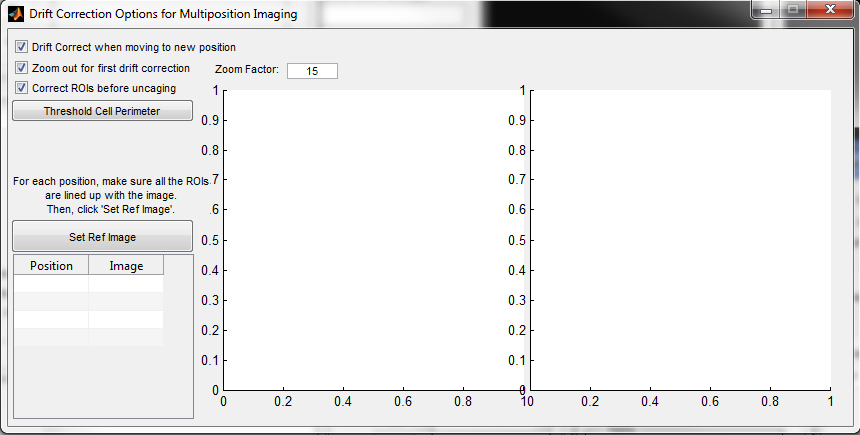

Drift Correction Options for Multiposition Imaging

- Drift correct when moving to a new position
- Make sure this is on if using drift correction. It may be redundant and will probably be removed later.
- Zoom out for first drift correction
- Allows the collection of a zoomed-out image (set by Zoom Factor) along with the regular image for drift correction. This is really just to have a 'bigger picture' reference of where your main imaging is, and helps you find your positions if they have drifted off.
- Correct ROIs before uncaging
- Before uncaging an image, the ROI position will be updated to find the closest edge of a spine.
- Threshold Cell Perimeter
- If the "correct ROIs..." toggle is on, use this to set the appropriate threshold level for the program to find the cell perimeter.
- Set Ref Image
- Sets a new reference image for the currently selected position
Created with the Personal Edition of HelpNDoc: Produce Kindle eBooks easily